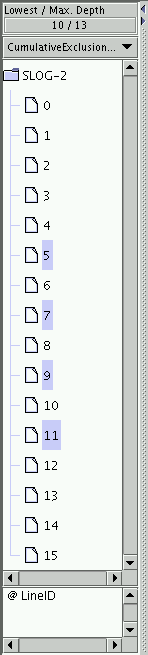

The concealable left panel in Timeline window is called Y-axis label
panel which contains a tree-like representation for Y-axis label for
the timelines. For a single viewmaps slog2 file from CLOG or RLOG,
the typical Y axis label panel looks like that is shown in Figure
![[*]](crossref.png) . Together with toolbar's label
buttons, e.g. LabelMark and LabelMove, and standard selection methods
by mouse click listed in Table , labels
can be rearranged easily to create a more easily understood timeline
canvas. For multiple viewmaps slog2 from IBM's UTE trace enviroment,
LabelExpand and LabelCollapse buttons will come in handy to expand
and collapse the label tree by one whole level. In order to minimize
unnecessary redraw of the timeline canvas, the sychronization between
the label panel and the timeline canvas is carried out passively,
i.e. user needs to press the CanvasReDraw button in the toolbar to
update the Timeline window with the changes from the label panel.
. Together with toolbar's label
buttons, e.g. LabelMark and LabelMove, and standard selection methods
by mouse click listed in Table , labels
can be rearranged easily to create a more easily understood timeline
canvas. For multiple viewmaps slog2 from IBM's UTE trace enviroment,
LabelExpand and LabelCollapse buttons will come in handy to expand
and collapse the label tree by one whole level. In order to minimize
unnecessary redraw of the timeline canvas, the sychronization between
the label panel and the timeline canvas is carried out passively,
i.e. user needs to press the CanvasReDraw button in the toolbar to
update the Timeline window with the changes from the label panel.
|  |